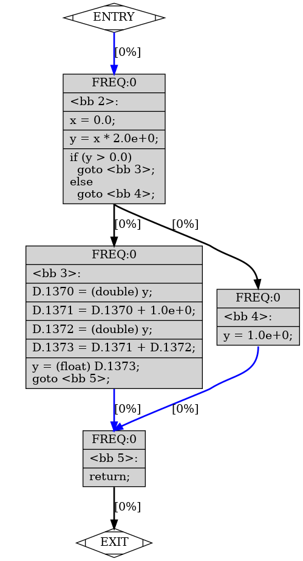

GCC Pass
Table of Contents
- 1. GCC Pass
- 1.1. Overview
- 1.2. debug options
- 1.3. tree pass
- 1.3.1. pass_build_cfg
- 1.3.2. pass_ccp
- 1.3.3. pass_fowrprop
- 1.3.4. pass_pre
- 1.3.5. pass_early_vrp
- 1.3.6. pass_profile
- 1.3.7. pass_dce
- 1.3.8. pass_dse
- 1.3.9. pass_copy_prop
- 1.3.10. pass_sink_code
- 1.3.11. pass_nrv
- 1.3.12. pass_return_slot
- 1.3.13. loop
- 1.3.14. pass_loop
- 1.3.15. pass_empty_loop
- 1.3.16. pass_complete_unroll
- 1.3.17. pass_loop_prefetch
- 1.3.18. pass_lim
- 1.3.19. pass_linear_transform
- 1.4. rtl pass
- 1.5. others
1 GCC Pass
1.1 Overview
所有的 pass 及其执行的顺序都在 passes.def 中指定.
1.2 debug options
用来 debug pass 的命令行参数有:
- `-fdump-{kind}-all`
- `-fdump-{kind}-{pass}`
- `-fdump-{kind}-{pass}-{options}`
- `-fdisable-{kind}-{pass}`
- `-fenable-{kind}-{pass}`
- `-fopt-info`
其中:
- kind 可以是 `tree` 或 `rtl`, 表示 gimple pass 或 rtl pass
pass 是 pass 的名字, 例如 ccp, evrp, 从代码中的 pass_data_xxx 中可以得到具体的名字, 例如:
const pass_data pass_data_ccp = { GIMPLE_PASS, /* type */ "ccp", /* name */ OPTGROUP_NONE, /* optinfo_flags */ TV_TREE_CCP, /* tv_id */ (PROP_cfg | PROP_ssa), /* properties_required */ 0, /* properties_provided */ 0, /* properties_destroyed */ 0, /* todo_flags_start */ TODO_update_address_taken, /* todo_flags_finish */ };
- options 可以是 `details`, `graph`, `all` 等, 例如 `-fdump-tree-ccp1-details`
具体 pass 的名字, enable/disable 情况, pass 间的依赖等可以通过 `-fdump-passes` 查看, 例如:
`gcc test.c -O0 -fdump-passes` 可以看到 `-O0` 下 `tree-ccp1` 及其上级依赖 `tree-early_optimizations` 为 OFF, 所以可以通过 `gcc test.c -O0 -fenable-tree-ccp1 -fenable-tree-early_optimizations` 来单独验证 pass_ccp1
1.3 tree pass
1.3.1 pass_build_cfg
$> cat test.c.011t.cfg
;; Function foo (foo, funcdef_no=0, decl_uid=1363, symbol_order=0)
;; 1 loops found
;;
;; Loop 0
;; header 0, latch 1
;; depth 0, outer -1
;; nodes: 0 1 2 3 4 5
;; 2 succs { 3 4 }
;; 3 succs { 5 }
;; 4 succs { 5 }
;; 5 succs { 1 }
foo ()
{
float y;
float x;
double D.1373;
double D.1372;
double D.1371;
double D.1370;
<bb 2>:
x = 0.0;
y = x * 2.0e+0;
if (y > 0.0)
goto <bb 3>;
else
goto <bb 4>;
<bb 3>:
D.1370 = (double) y;
D.1371 = D.1370 + 1.0e+0;
D.1372 = (double) y;
D.1373 = D.1371 + D.1372;
y = (float) D.1373;
goto <bb 5>;
<bb 4>:
y = 1.0e+0;
<bb 5>:
return;
}
<bb x> 表示 basic block, 通过 `-fdump-tree-cfg-graph` 可以 dump 出 cfg 对应的 dot 文件, 转换为 png 后为:

转换为 cfg (或者 basic block) 的好处是同一个 basic block 内部都是线性的指令, 容易做 local optimization
1.3.2 pass_ccp
1.3.3 pass_fowrprop
1.3.4 pass_pre
1.3.5 pass_early_vrp
1.3.6 pass_profile
1.3.7 pass_dce
1.3.8 pass_dse
1.3.9 pass_copy_prop
1.3.10 pass_sink_code
1.3.11 pass_nrv
1.3.12 pass_return_slot
1.3.13 loop
1.3.14 pass_loop
1.3.15 pass_empty_loop
1.3.16 pass_complete_unroll
1.3.17 pass_loop_prefetch
1.3.18 pass_lim
1.3.19 pass_linear_transform
1.4 rtl pass
1.4.1 pass_expand
gimple 转换为 rtl
1.4.2 pass_ira
- 寄存器分配
- 计算 frame_info, 例如计算 frame size 和需要保存和恢复的寄存器 (mask)
1.4.2.1 frame_info
taget 需要定义 INITIAL_ELIMINATION_OFFSET 这个宏, 用来计算 frame info.
static void riscv_compute_frame_info(void) { struct riscv_frame_info *frame; HOST_WIDE_INT offset; bool interrupt_save_prologue_temp = false; unsigned int regno, i, num_x_saved = 0, num_f_saved = 0; frame = &cfun->machine->frame; memset(frame, 0, sizeof(*frame)); /* NOTE: naked function */ if (!cfun->machine->naked_p) { for (regno = GP_REG_FIRST; regno <= GP_REG_LAST; regno++) /* NOTE: riscv_save_reg_p 用来确定寄存器是否需要保存, 例如: * 如果 regno 是 s0~ */ if (riscv_save_reg_p(regno)) frame->mask |= 1 << (regno - GP_REG_FIRST), num_x_saved++; /* Find out which FPRs we need to save. This loop must iterate over the same space as its companion in riscv_for_each_saved_reg. */ if (TARGET_HARD_FLOAT) for (regno = FP_REG_FIRST; regno <= FP_REG_LAST; regno++) if (riscv_save_reg_p(regno)) frame->fmask |= 1 << (regno - FP_REG_FIRST), num_f_saved++; } /* NOTE: 计算 offset 时是按照 stack 从低到高的顺序 */ /* NOTE: 1. 栈顶是 outgoing args, 即 spill 到栈上的 args */ offset = RISCV_STACK_ALIGN(crtl->outgoing_args_size); /* NOTE: 2. 然后是 local variable */ offset += RISCV_STACK_ALIGN(get_frame_size()); /* The virtual frame pointer points above the local variables. */ frame->frame_pointer_offset = offset; /* NOTE: 3. 需要保存的 fp */ if (frame->fmask) offset += RISCV_STACK_ALIGN(num_f_saved * UNITS_PER_FP_REG); frame->fp_sp_offset = offset - UNITS_PER_FP_REG; /* NOTE: 4. 需要保存的 gp */ if (frame->mask) { unsigned x_save_size = RISCV_STACK_ALIGN(num_x_saved * UNITS_PER_WORD); offset += x_save_size; } frame->gp_sp_offset = offset - UNITS_PER_WORD; frame->hard_frame_pointer_offset = offset; frame->total_size = offset; }
1.4.2.1.1 naked
naked function, 是指不需要 gcc 生成 prolog 和 epilogue 的函数, 例如一些完全用内联汇编写的函数.
- Backlinks
GCC Attribute (GCC Attribute > naked): naked
1.4.2.1.2 riscv_save_reg_p
static bool riscv_save_reg_p(unsigned int regno) { /* NOTE: global_regs 是指 global regizer variable * https://gcc.gnu.org/onlinedocs/gcc/Global-Register-Variables.html * */ bool call_saved = !global_regs[regno] && !call_used_or_fixed_reg_p(regno); /* NOTE: df_regs_ever_live_p 指该 reg 在当前函数修改过, 例如, 若函数是 leaf * function, ra 会因为没有修改过而不需要保存 */ bool might_clobber = crtl->saves_all_registers || df_regs_ever_live_p(regno); if (call_saved && might_clobber) return true; if (regno == HARD_FRAME_POINTER_REGNUM && frame_pointer_needed) return true; if (regno == RETURN_ADDR_REGNUM && crtl->calls_eh_return) return true; /* ... */ return false; } inline bool call_used_or_fixed_reg_p(unsigned int regno) { return fixed_regs[regno] || this_target_hard_regs->x_call_used_regs[regno]; }
FIXED_REGISTER 和 CALL_USED_REGISTERS 为 target 定义的, 例如:
#define FIXED_REGISTERS \ { /* General registers. */ \ 1, 0, 1, 1, 1, 0, 0, 0, 0, 0, 0, 0, 0, 0, 0, 0, 0, 0, 0, 0, 0, 0, 0, \ 0, 0, 0, 0, 0, 0, 0, 0, 0, /* Floating-point registers. */ \ 0, 0, 0, 0, 0, 0, 0, 0, 0, 0, 0, 0, 0, 0, 0, 0, 0, 0, 0, 0, 0, 0, \ 0, 0, 0, 0, 0, 0, 0, 0, 0, 0, /* Others. */ \ 1, 1 \ } /* a0-a7, t0-t6, fa0-fa7, and ft0-ft11 are volatile across calls. The call RTLs themselves clobber ra. */ #define CALL_USED_REGISTERS \ { /* General registers. */ \ 1, 0, 1, 1, 1, 1, 1, 1, 0, 0, 1, 1, 1, 1, 1, 1, 1, 1, 0, 0, 0, 0, 0, \ 0, 0, 0, 0, 0, 1, 1, 1, 1, /* Floating-point registers. */ \ 1, 1, 1, 1, 1, 1, 1, 1, 0, 0, 1, 1, 1, 1, 1, 1, 1, 1, 0, 0, 0, 0, \ 0, 0, 0, 0, 0, 0, 1, 1, 1, 1, /* Others. */ \ 1, 1 \ }
FIXED_REGISTERS 是有特殊意义的 reg, 任何时候不能被随便修改, 例如 zero, sp, gp, tp
CALL_USED_REGISTERS 包含 FIXED_REGISTERS, 以及其它在函数调用时可能被 caller 修改的 reg, 基本上 (CALL_USED_REGISTERS - FIXED_REGISTERS) 即 caller saved reg, 而 ~CALL_USED_REGISTERS 即 callee saved reg.
另外 gcc 可以通过运行时参数 `-ffixed-reg` 控制哪些 reg 属于 FIXED_REGISTERS. FIXED_REGISTERS 不会被 ira 分配, 也不会被 prologue 保存
1.4.2.1.3 backtrace
#0 riscv_save_reg_p (regno=0) at ../.././riscv-gcc/gcc/config/riscv/riscv.c:3636 #1 0x0000000001544432 in riscv_compute_frame_info () at ../.././riscv-gcc/gcc/config/riscv/riscv.c:3766 #2 0x000000000154483f in riscv_initial_elimination_offset (from=64, to=2) at ../.././riscv-gcc/gcc/config/riscv/riscv.c:3850 #3 0x0000000001062641 in set_initial_elim_offsets () at ../.././riscv-gcc/gcc/reload1.c:3769 #4 0x000000000105c432 in calculate_elim_costs_all_insns () at ../.././riscv-gcc/gcc/reload1.c:1559 #5 0x0000000000e8eee5 in ira_costs () at ../.././riscv-gcc/gcc/ira-costs.c:2296 #6 0x0000000000e85524 in ira_build () at ../.././riscv-gcc/gcc/ira-build.c:3426 #7 0x0000000000e7b6ae in ira (f=0x0) at ../.././riscv-gcc/gcc/ira.c:5655 #8 0x0000000000e7bf6b in (anonymous namespace)::pass_ira::execute (this=0x23413c0) at ../.././riscv-gcc/gcc/ira.c:5978 #9 0x0000000000fdd7d1 in execute_one_pass (pass=0x23413c0) at ../.././riscv-gcc/gcc/passes.c:2567 #10 0x0000000000fddb1e in execute_pass_list_1 (pass=0x23413c0) at ../.././riscv-gcc/gcc/passes.c:2656 #11 0x0000000000fddb4f in execute_pass_list_1 (pass=0x2340220) at ../.././riscv-gcc/gcc/passes.c:2657 #12 0x0000000000fddbab in execute_pass_list (fn=0x7ffff777e000, pass=0x233c270) at ../.././riscv-gcc/gcc/passes.c:2667 #13 0x0000000000b6f617 in cgraph_node::expand (this=0x7ffff7780000) at ../.././riscv-gcc/gcc/cgraphunit.c:1830 #14 0x0000000000b6fd15 in cgraph_order_sort::process (this=0x2333788) at ../.././riscv-gcc/gcc/cgraphunit.c:2069 #15 0x0000000000b6ffce in output_in_order () at ../.././riscv-gcc/gcc/cgraphunit.c:2137 #16 0x0000000000b705a6 in symbol_table::compile (this=0x7ffff7670000) at ../.././riscv-gcc/gcc/cgraphunit.c:2355 #17 0x0000000000b709d2 in symbol_table::finalize_compilation_unit (this=0x7ffff7670000) at ../.././riscv-gcc/gcc/cgraphunit.c:2539 #18 0x000000000110d05f in compile_file () at ../.././riscv-gcc/gcc/toplev.c:482 #19 0x00000000011100c6 in do_compile () at ../.././riscv-gcc/gcc/toplev.c:2201 #20 0x00000000011103e8 in toplev::main (this=0x7fffffffc176, argc=14, argv=0x7fffffffc288) at ../.././riscv-gcc/gcc/toplev.c:2340 #21 0x0000000001bf4bf5 in main (argc=14, argv=0x7fffffffc288) at ../.././riscv-gcc/gcc/main.c:39
1.4.3 pass_reload
1.4.4 pass_thread_prologue_and_epilogue
在函数中插入的 prologue 和 epilogue. prologue 是指函数开头需要插入的一些指令, 例如分配 stack frame, 保存寄存器. epilogue 是函数返回前需要插入指令, 例如释放 stack frame, 恢复寄存器.
1.4.4.1 prologue
prologue 对应的 rtl 是由 md 中的通过 define_expand 定义的 prologue 决定的.
rtx gen_prologue (void) { rtx_insn *_val = 0; start_sequence (); { #define FAIL return (end_sequence (), _val) #define DONE return (_val = get_insns (), end_sequence (), _val) #line 2202 "../.././riscv-gcc/gcc/config/riscv/riscv.md" { riscv_expand_prologue (); DONE; } #undef DONE #undef FAIL } emit_insn (const1_rtx); _val = get_insns (); end_sequence (); return _val; }
riscv_expand_prologue 负责生成函数开头的:
addi sp, sp , xxx sw ra, (4)sp sw s0, (8)sp ## ...
对应的 rtx
/* NOTE: 这段代码负责生成函数开头的 * addi sp, sp , xxx * sw ra, (4)sp * sw s0, (8)sp * ... * */ void riscv_expand_prologue(void) { struct riscv_frame_info *frame = &cfun->machine->frame; /* NOTE: frame->total_size 在 pass_ira 时确定下来 */ HOST_WIDE_INT size = frame->total_size; unsigned mask = frame->mask; rtx insn; if (flag_stack_usage_info) current_function_static_stack_size = size; /* Save the registers. */ /* NOTE: frame->mask 指哪些寄存器需要保存, 也是 pass_ira 时确定的 */ if ((frame->mask | frame->fmask) != 0) { /* NOTE: 这里并没有直接使用 frame->total_size, 是因为 total_size 很大时 * 会无法通过一个 addi 完成, 所以可以先分配足够存放 saved reg 的小一点的 * `step`*/ HOST_WIDE_INT step1 = MIN(size, riscv_first_stack_step(frame)); /* NOTE: addi sp, sp, -step1 */ insn = gen_add3_insn( stack_pointer_rtx, stack_pointer_rtx, GEN_INT(-step1)); size -= step1; riscv_for_each_saved_reg(size, riscv_save_reg, false, false); } frame->mask = mask; /* Undo the above fib. */ /* NOTE: 需要保存 fp, 例如存在 alloca */ if (frame_pointer_needed) { insn = gen_add3_insn( hard_frame_pointer_rtx, stack_pointer_rtx, GEN_INT(frame->hard_frame_pointer_offset - size)); RTX_FRAME_RELATED_P(emit_insn(insn)) = 1; riscv_emit_stack_tie(); } /* NOTE: frame->total_size 剩下的部分 */ if (size > 0) { /* NOTE: SMALL_OPERAND 是指 12 bit 能表示的立即数 */ if (SMALL_OPERAND(-size)) { insn = gen_add3_insn( stack_pointer_rtx, stack_pointer_rtx, GEN_INT(-size)); RTX_FRAME_RELATED_P(emit_insn(insn)) = 1; } else { riscv_emit_move(RISCV_PROLOGUE_TEMP(Pmode), GEN_INT(-size)); emit_insn(gen_add3_insn( stack_pointer_rtx, stack_pointer_rtx, RISCV_PROLOGUE_TEMP(Pmode))); /* Describe the effect of the previous instructions. */ insn = plus_constant(Pmode, stack_pointer_rtx, -size); insn = gen_rtx_SET(stack_pointer_rtx, insn); riscv_set_frame_expr(insn); } } }
1.4.4.2 epilogue
1.4.4.3 backtrace
#0 gen_prologue () at ../.././riscv-gcc/gcc/config/riscv/riscv.md:2202 #1 0x000000000153aada in target_gen_prologue () at ../.././riscv-gcc/gcc/config/riscv/sync.md:558 #2 0x0000000000d017d6 in make_prologue_seq () at ../.././riscv-gcc/gcc/function.c:5801 #3 0x0000000000d01d8b in thread_prologue_and_epilogue_insns () at ../.././riscv-gcc/gcc/function.c:6019 #4 0x0000000000d02cbb in rest_of_handle_thread_prologue_and_epilogue () at ../.././riscv-gcc/gcc/function.c:6510 #5 0x0000000000d02ecf in (anonymous namespace)::pass_thread_prologue_and_epilogue::execute (this=0x23416c0) at ../.././riscv-gcc/gcc/function.c:6586 #6 0x0000000000fdd7d1 in execute_one_pass (pass=0x23416c0) at ../.././riscv-gcc/gcc/passes.c:2567 #7 0x0000000000fddb1e in execute_pass_list_1 (pass=0x23416c0) at ../.././riscv-gcc/gcc/passes.c:2656 #8 0x0000000000fddb4f in execute_pass_list_1 (pass=0x2341480) at ../.././riscv-gcc/gcc/passes.c:2657 #9 0x0000000000fddb4f in execute_pass_list_1 (pass=0x2340220) at ../.././riscv-gcc/gcc/passes.c:2657 #10 0x0000000000fddbab in execute_pass_list (fn=0x7ffff777e000, pass=0x233c270) at ../.././riscv-gcc/gcc/passes.c:2667 #11 0x0000000000b6f617 in cgraph_node::expand (this=0x7ffff7780000) at ../.././riscv-gcc/gcc/cgraphunit.c:1830 #12 0x0000000000b6fd15 in cgraph_order_sort::process (this=0x2333788) at ../.././riscv-gcc/gcc/cgraphunit.c:2069 #13 0x0000000000b6ffce in output_in_order () at ../.././riscv-gcc/gcc/cgraphunit.c:2137 #14 0x0000000000b705a6 in symbol_table::compile (this=0x7ffff7670000) at ../.././riscv-gcc/gcc/cgraphunit.c:2355 #15 0x0000000000b709d2 in symbol_table::finalize_compilation_unit (this=0x7ffff7670000) at ../.././riscv-gcc/gcc/cgraphunit.c:2539 #16 0x000000000110d05f in compile_file () at ../.././riscv-gcc/gcc/toplev.c:482 #17 0x00000000011100c6 in do_compile () at ../.././riscv-gcc/gcc/toplev.c:2201 #18 0x00000000011103e8 in toplev::main (this=0x7fffffffc176, argc=14, argv=0x7fffffffc288) at ../.././riscv-gcc/gcc/toplev.c:2340 #19 0x0000000001bf4bf5 in main (argc=14, argv=0x7fffffffc288) at ../.././riscv-gcc/gcc/main.c:39
1.4.5 pass_peephole2
1.4.6 pass_final
生成汇编
1.4.7 pass_sched
1.4.8 pass_rtl_dse1
Backlinks
GCC Backend (GCC Backend > rtl pass): rtl pass